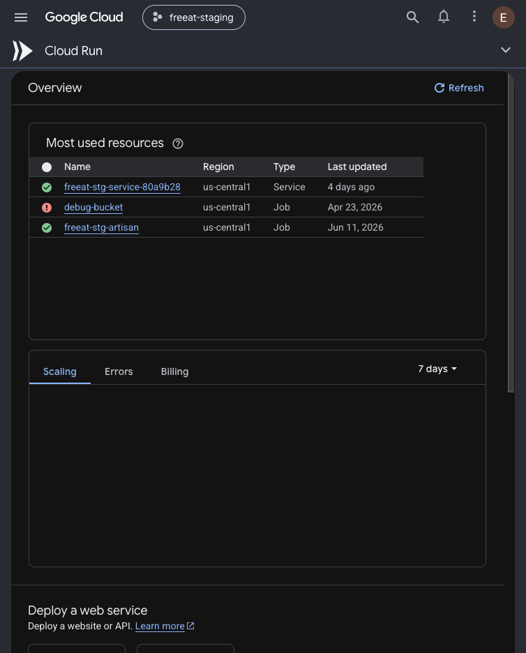
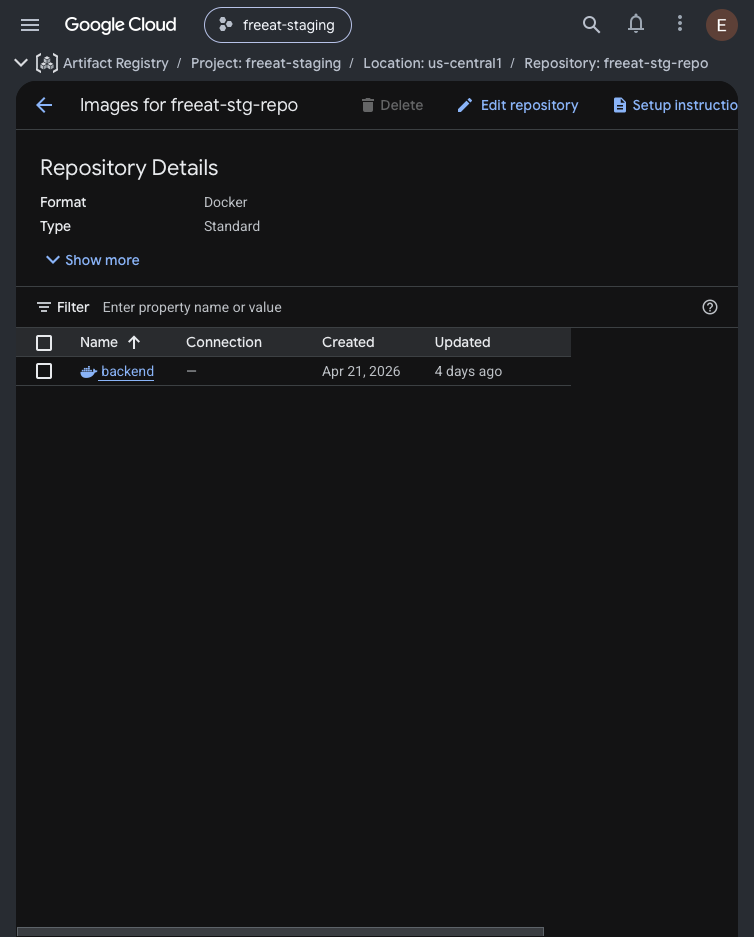
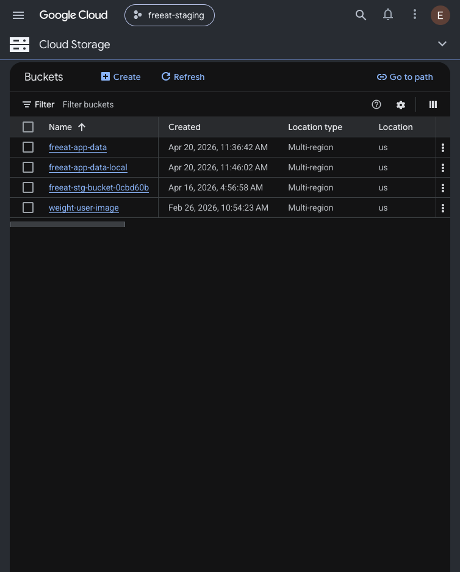
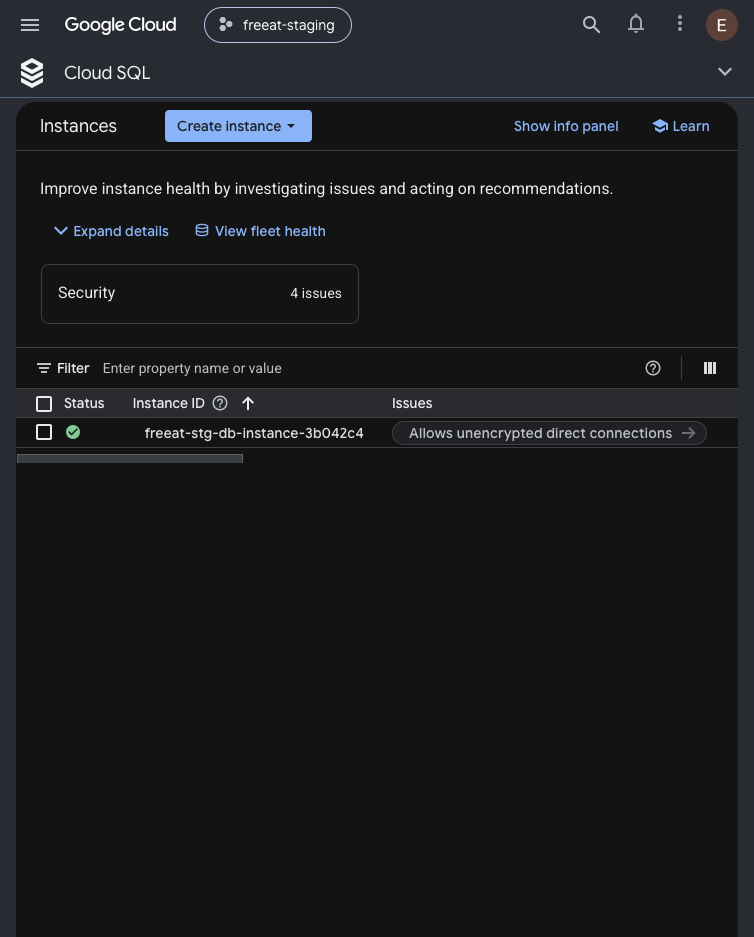
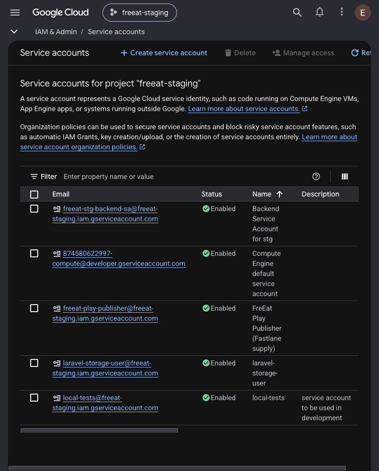

The freeat backend runs entirely on managed Google Cloud services, all defined as code in one Pulumi program (~/freeat/pulumi/index.ts). This page tours the five resources it uses — what each one is, how freeat uses it, and a real screenshot from the Google Cloud console of the freeat-staging project. For how they're created, see the Pulumi explainer.
💡 טיפ: העבירו את העכבר (או הקישו באצבע) מעל מילים מסומנות בקו מקווקו צהוב לראות הסבר בעברית.
One identity (a service account) ties it together: Cloud Run runs the container image from Artifact Registry, and — acting as that service account — talks to the MySQL database and the file bucket.
flowchart TB
Dev["deploy-cloudrun.sh"] -->|"podman push"| AR
subgraph GCP["Google Cloud · project freeat-staging"]
AR["Artifact Registry
freeat-stg-repo"]
Run["Cloud Run
freeat-stg-service"]
SQL[("Cloud SQL · MySQL 8
freeat-stg-db-instance")]
GCS[("Cloud Storage
freeat-stg-bucket")]
SA["Service Account
freeat-stg-backend-sa"]
end
AR -->|"image backend:latest"| Run
Run -->|"runs as"| SA
Run -->|"unix socket /cloudsql"| SQL
Run -->|"gcs disk · user files"| GCS
SA -.->|"cloudsql.client"| SQL
SA -.->|"storage.admin"| GCS
Solid arrows are data paths; dashed arrows are the IAM permissions that make them allowed.
What it is. A serverless way to run a container: give it an image, it runs it behind an HTTPS URL and autoscales for you.
In freeat. This is the Laravel API itself — the service freeat-stg-service-80a9b28. It's kept public (ingress: ALL), holds at least one warm instance (minInstanceCount: 1), gets 8 CPU / 32 Gi, and mounts the database over a unix socket. Every env var comes from Pulumi.stg.yaml.

What it is. A private registry for Docker images, hosted inside your GCP project.
In freeat. The repository freeat-stg-repo holds one image, backend. deploy-cloudrun.sh builds it with podman and pushes backend:latest here; Cloud Run then pulls that exact image. Keeping the image next to Cloud Run (same region) makes pulls fast and free.

What it is. Object storage — a bucket that holds files (images, uploads) at any scale, each reachable by its own URL.
In freeat. The bucket freeat-stg-bucket-0cbd60b is Laravel's gcs disk — where user files live (via Spatie Media Library). The backend writes and reads objects; to hand out temporary download links it signs them itself (see the Service Account below). Uniform bucket-level access keeps permissions simple.

What it is. A managed MySQL database — Google runs the engine, backups and patching; you just get a database.
In freeat. The instance freeat-stg-db-instance-3b042c4 runs MySQL 8.0 and holds the laravel database with user laravel_user. Cloud Run reaches it through a unix socket mounted at /cloudsql, so no password ever crosses the open network. The password itself is a Pulumi secret, generated at random.

What it is. A service account is a non-human identity. IAM then grants it roles — collections of permissions.
In freeat. Cloud Run runs as freeat-stg-backend-sa. It's given exactly the access the app needs, nothing more:
roles/cloudsql.client roles/cloudsql.instanceUser roles/storage.admin roles/iam.serviceAccountTokenCreator
The last one lets the account sign blobs as itself — that's how it makes temporary signed URLs for files without shipping a key file. A JSON credentials key is also generated, but only for local development.
